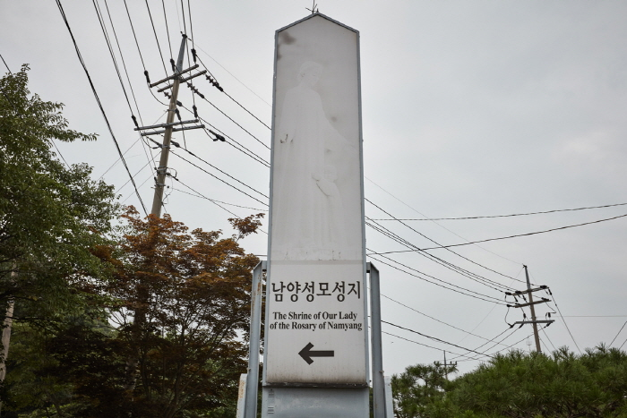

남양성모성지

지역 : 경기 화성
설명 : 병인박해 때 무명의 순교자들이 희생된 곳으로 우리나라 최초이자 유일한 성모성지.
웹사이트 링크 1:
http://www.namyangmaria.org/
웹사이트 링크 2:
https://place.map.kakao.com/10186752
웹사이트 링크 3:
https://www.google.com/maps/place/%EC%B2%9C%EC%A3%BC%EA%B5%90+%EB%82%A8%EC%96%91+%EC%84%B1%EB%AA%A8+%EC%84%B1%EC%A7%80/@37.2063859,126.8146679,17z/data=!3m1!4b1!4m5!3m4!1s0x357b12d251f5d239:0xec7af3c6bcc48f04!8m2!3d37.2063816!4d126.8168566?hl=ko